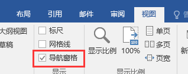
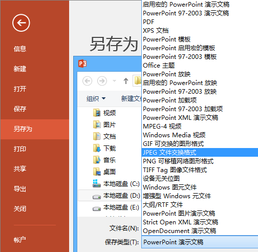
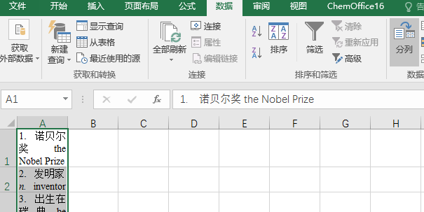

Microsoft 系列
简称
- 微软Microsoft有时简称MS（取首字母）
- 如：msconfig(Microsoft System Configuration)、msdn(Microsoft Developer Network)
下载
- 推荐站点（MSDN，I tell you）：https://msdn.itellyou.cn/
- 需要注明的是，该网站并非微软官方，但完全免费，收费与下载无关
- 收藏夹里放放好，百度仿冒站点极多，不保证文件准确性
- 推荐下载工具（ED2K）：迅雷极速版（已停止更新，请使用安装包）
为什么不使用最新版迅雷？
- 欢迎尝试迅雷浏览器10.0
为什么不使用微软官方站点？
- 懒得爬墙
- 国内速度较慢


破解绿色
注意
- 此处仅照顾较新版本的情况
基本操作
- 使用：HEU_KMS_Activator_v11.2.0（或更新）
- 限定激活：批量授权版（VL）
- 官网未找到
-
实测：Win10商业版（business editions）中，无法激活
-
使用：KMSpico
- 实测：Win10商业版（business editions）中，激活为教育版
-
可能是官网：https://kmspi.co/
-
特例：Office2016批量授权版，在MSDN中没有
-
SW_DVD5_Office_Professional_Plus_2016_W32_ChnSimp_MLF_X20-41351.iso
- 940.74MB
-
49D97BD1B4DFEAAA6B45E3DD3803DAC1
thunder://QUFodHRwOi8vZ2RsLmxpeGlhbi52aXAueHVubGVpLmNvbS9TVyU1RkRWRDUlNUZPZmZpY2UlNUZQcm9mZXNzaW9uYWwlNUZQbHVzJTVGMjAxNiU1RlczMiU1RkNoblNpbXAlNUZNTEYlNUZYMjAlMkQ0MTM1MSUyRUlTTz9maWQ9WmE0VVMrNUd3RmtGdCtIb0VneGdHTC9sWlc0QTZNczZBQUFBQU05OG5uZkE0UFlTYXFlbmRldXVDUW9EanNVTyZtaWQ9NjY2JnRocmVzaG9sZD0xNTAmdGlkPUE5QzUwOUJGNjI4NUMyMjFCODhCNUU2RUE5QUFDQzVDJnNyY2lkPTYmdmVybm89MSZnPUNGN0M5RTc3QzBFMEY2MTI2QUE3QTc3NUVCQUUwOTBBMDM4RUM1MEUmdWk9MTAwNDY5ODUxMyZzPTk4NjQ0MTcyOCZwaz1rdWFpY2h1YW4mYWs9ODowOjk5OTowJmU9MTQ0NDExNTQ1MyZtcz01MTIwMCZjaT0mY2s9Njc3OEZCNkM5Nzk4QjYzQzcwQjQ4ODk3QkQ5MjNGQ0UmYXQ9QTA5QjZBQjI4Q0ZCM0EzODZCRkIzOEUxQkI1NDNGNjEmaHk9MSZuPTBERTJFMUZGOTJCODNDMzA1RkZFRDBDNkJGOEQxRDVBNTBDM0Q5QzZCMzlEMEI2QzZGREZEN0NDODlCRTE0NzA3M0VFODQ5MEU3RDgyNzUyMzM4M0U5RTNCRTgwMkI2QzZEQzFFOUVEOUFBODI3NUQzMjgxOUI5NEU3REQ0RDM0MkVGOEU1RUZENkVFNzgwNTAwWlo= -
SW_DVD5_Office_Professional_Plus_2016_64Bit_ChnSimp_MLF_X20-42426.ISO
- 1123452928 B
- MD5: 60DC8B1892F611E41140DD3631F39793
- SHA1: AEB58DE1BC97685F8BC6BFB0A614A8EF6903E318
- CRC32: 8D8AC6D1
ed2k://|file|SW_DVD5_Office_Professional_Plus_2016_64Bit_ChnSimp_MLF_X20-42426.ISO|1123452928|31087A00FF67D4F5B4CBF4AA07C3433B|/
Windows
| English | 翻译 |
|---|---|
| Chinese-Simplified | 中文简体 |
| business editions | 商业版【企业版、教育版、专业版】（VL批量授权版） |
| consumer editions | 消费版【家庭版、家庭单语言版、教育版、专业版、专业教育版、专业工作站版】 |
| multi-edition | 多版本 |
| Enterprise | 企业版 |
| Pro | 专业版 |
| Education | 教育版 |
| Language Pack | 语言包 |
| VL / Vol | 批量授权版 |
| Service Pack | SP，服务包，大型补丁 |
PE系统
- Windows Preinstallation Environment（Windows PE），Windows预安装环境
- 用于安装Windows，重置密码，硬盘分区等操作
- 推荐：WePE ：http://www.wepe.com.cn/download.html
- 注意安装程序位数要求，即：安装64位使用64位PE
安装
安装位置与应用程式
- 安装在系统盘（C盘）：直接setup.exe
- 安装在其他盘（多系统）：Source\install.exe
- BOOT引导文件：boot.wim
- 系统核心文件：install.wim，也可能是source.wim，根据版本不同
直接安装
- 除了32位不能安装64位系统，其他可直接挂载镜像文件进行安装
- 32位安装64位方法：
- 1.使用PE系统安装
- 先下载镜像文件（PE系统没有网）
- 找到系统安装工具，选择iso文件，写入至c盘即可（可能需要格式化）
- 2.使用NT10HDD进行安装
- 下载NT10HDD，将ISO文件进行解压
- 打开NT10，按照提示进行操作
- 1.使用PE系统安装
关于WIM文件
- WIM: Microsoft Windows Imaging Format
- Windows的镜像格式，如果不需要引导文件，可以直接使用install.wim安装系统
虚拟桌面
- Win10自带，MacOs早有的功能
- https://sspai.com/post/45594
- https://support.microsoft.com/zh-cn/help/4027871/windows-10-touchpad-gestures
其他一些操作
Office
安装注意
- 需要特别说明的是，尽管同时提供了32位和64位的Office，我们仍然推荐安装32位的Office
- 具体原因请查阅：https://support.office.com/zh-cn/article/%E9%80%89%E6%8B%A9-32-%E4%BD%8D%E6%88%96-64-%E4%BD%8D%E7%89%88%E6%9C%AC%E7%9A%84-Office-ca3253e5-ac01-4242-8a64-b56111a6f32d
PDF导出
基本方法
- 方法1：需要安装Adobe Acrobat，具体安装查看Adobe Acrobat项
- 打印机安装成功后，可以选择Adobe PDF打印
- 注意：只有A4页面可选，需要进行处理请在Acrobat界面进行剪切
- 方法2：Office自带(推荐)
- 方法3：Office自带

特别注意
- 打开PDF文件，文件-属性
- 修改标题、作者、说明等信息

为什么要修改？
- 我想你不会希望逼格降低，尽管只有Google Chrome（核心的）浏览器支持PDF查看
Word
代码格式插入
- 使用：http://www.planetb.ca/syntax-highlight-word
- 或Visual studio code：https://code.visualstudio.com
关于公式
普通操作
- 插入-（符号-）公式
- 在其中有中文时，行高会变大
- 可以选中文版后再加入公式（但不能含回车）
- 默认是处于中间的，可以在右边的箭头调
- 其中有很多预置公式，可以试试看
- 大括号的对齐（在文本前面加个&，中英文无所谓），会将大括号中的&都对到一条直线上
- 左右大括号可以修改，右键需要点对位置（整个大括号右方都要选中）

- 当然如果是矩阵就需要右键选中矩阵进行对齐
公式一些特殊的技巧

- 先选中，创建公式，点击两次普通文本即可（更新他的初始状态）
- 但是这样中文会斜体，方法：选中正常中文，格式刷，将英文刷进去不会又影响
标题
- 目录需要先设置标题,Word预置了一些的标题，右键修改可以查看数据，也可以进行修改
- 但是并不推荐修改预置内容


自定义标题
- 我们可以自己添加标题
- 首先，将需要做的一个标题单独一行（标题都是单行的），并调整字号、加粗、斜线、颜色等数据

- 选中内容，创建样式，当然也可以点击修改进行细节修改
- 创建样式比较重要一点是为了目录，调整目录层级：

- 大纲级别就是目录级别，1为最高
标题的存储和读取
- 右下角斜箭头，管理样式-导入/导出，左边是本文的标题，右边是本地的标题
- （本地所有文档可以读取，但是其他电脑不可读取）
- 选中后可以左边或右边点击标题，复制到文档中

目录
- 自定义目录可以修改大纲级别以及显示内容
- 显示级别：最多能显示的目录级别
- 选项：设置有效样式和目录级别，如果不填则不显示
- 修改：修改-选中需要修改项-修改可以设置对应目录的缩进和样式（缩进推荐0,2,4,6递增）
- 最不好使的一点就是目录修改后需要重新创建并且貌似没法读取之前的设置就很尴尬了
- 目录在Word文档中Ctrl+单击即可跳转
- 导出的PDF文档直接单击即可跳转
- 鼠标放置于目录上，整个目录上方会显示更新目录
- 有更新整个目录和更新页码，自行尝试（注：在WEB模式下更新，页码会全是1）
长横线、虚线以及特殊符号
长线
- 打出：三个对应符号后面回车即可打出
- 删除：在下一行开头退格到上一行即可删除（也适用于不需要却意外打出的）
- 特殊符号：符号后面空格即可打出
在侧边显示目录
- 视图-导航窗格打钩
- 
PowerPoint(PPT)
轻松使用-剪辑板
- 单击右下角可打开剪辑板
- 剪辑板保存了复制或剪切的内容
- 这代表了我们可以一次复制一堆然后要黏贴哪个就点哪个
- （Ctrl +C/V一次只能一个）
图片导出
- 另存为并根据需要选择
- 
导出高清大图
- 默认为96DPI
- 进入注册表编辑器，找到
HKEY_CURRENT_USER\Software\Microsoft\Office\xx.0\PowerPoint\Options- 新建整数（DWORD值）
- 键名：
ExportBitmapResolution键值：分辨率（DPI）50-307，默认96（注意选择十进制！）
反映时无响应
- 没死机：点点点直到出现已停止运行，点击关闭！！不要点等待！！，立即重启
- 死机了：强制重启吧…
PPT放映
- 使用扩展屏幕方法放映（Win+P）
- 在彩排时把背景设置成活动背景，防止跳线
- Office2016，直接在屏幕左边点击超链接或放下一张
- Office2012，鼠标切到扩展屏后点超链接和切下一张，可以在放映途中改内容，但是当前页面放映会回归初始状态
- 如果视频很大，插到PPT播放会卡成PPT，解决方案见：PPT视频外接播放
PPT视频外接播放
- 基于：扩展屏幕播放视频
- 使用超链接将视频链接到图片等
- 单击图片，会在扩展屏幕上播放视频
- 视频即将播放完成，按Win键弹出任务栏，右键视频关掉（扩展屏不会显示主屏幕的界面）
- 不确保一定可行，请多次尝试及调试
PPT视频卡顿
- 暴力方案：重启电脑
- 普通方案：清除缓存
- 强制方案：不在ppt中播放，直接在资源管理器使用播放器进行播放
PPT模板和素材
快捷键系列操作
Excel（普通操作）
一些名词
| 名词 | 解释 |
|---|---|
| 宏 | 一段VBA程序，用于进行一些批量操作，用户可以录制宏，也可以手动编写VBA程序 |
| VBA | Visual Basic for Applications，以VB的语法加上部分应用程序对应的对象 |
| Alt + F11 | Office的VBA编程界面 |
| 工作表 | Excel显示的表格，可以在下方进行工作表切换 |
| 工作簿 | 一个Excel文件就是一个工作簿，一个工作簿中可以有很多表 |
| 单元格 | 工作表中的格子，用列号（字母）+行号（数字）表示，如CD2333 |
| 行号 | 用数字表示，03-最大为65536，07+为1048576 |
| 列号 | 用字母表示，最大为XFD（16384列） |
小技巧
- Ctrl+上下左右箭头跳转到最大值处
分割文本
- 在黏贴文本的时候，换行会自动进行换行
- 使用分列可以进行分割文本操作
- 
- 根据需要进行分列


复制工作表
- 右键工作表名称，选中建立副本

移动工作表
- 此处列举两种方法，可自行选择或使用其他方法
- 按住工作表名称不放，左右拖动
- 右键，移动或复制工作表（不勾选建立副本）
删除工作表
- 右键工作表名称-删除
- 注：工作表删除不可恢复
重命名工作表
- 此处列举两种方法，可自行选择或使用其他方法
- 双击工作表名称
- 右键工作表名称-重命名
隐藏工作表
- 普通操作：右键工作表名称-隐藏（可以右键其他工作表取消隐藏）【隐藏后数据可以读取】
- 高端操作：
Alt + F11打开VBA界面，选中需要修改的表格，修改Visible属性：-1：显示 0：普通隐藏 2：高端隐藏
保护工作表
- 右键工作表名称-保护工作表-设置密码
- 或在审阅中进行操作

公式和自动填充
- 见
excel.xls文件